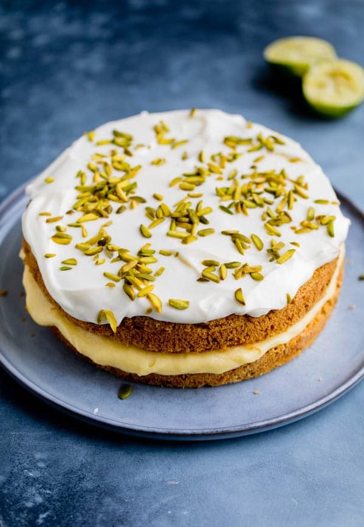

Torciki z cukinią i limonkowym kremem

Składniki na ciasto z cukinią – 2 blaty ciasta:
-250 g cukinii (waga ze skórką)
-2 duże jajka
-140 g drobnego cukru do wypieków
-125 ml oleju rzepakowego lub słonecznikowego
-220 g mąki pszennej
-1 łyżeczka proszku do pieczenia
-1 łyżeczka sody oczyszczonej
Wszystkie składniki powinny być w temperaturze pokojowej. Cukinię umyć i zetrzeć na tarce na dużych oczkach (nie obierając ze skórki), odłożyć.
W misie miksera umieścić jajka (bez rozdzielania na białka i żółtka) oraz drobny cukier do wypieków. Ubijać (końcówkami miksera do ubijania piany z białek) na najwyższych obrotach miksera do momentu uzyskania jasnej i puszystej mieszanki, która nawet potroi swoją objętość. Piana podnoszona na mieszadle miksera powinna opadać lekko w postaci wstążki na resztę ciasta i pozostawać na jej powierzchni przez kilka sekund. Powoli wlewać olej, kontynuując ubijanie składników. Bezpośrednio do piany przesiać mąkę pszenną, proszek do pieczenia i sodę oczyszczoną a następnie wymieszać delikatnie szpatułką tylko do połączenia się składników. Dodać startą cukinię i krótko wymieszać.
Dwie formy o średnicy 20 lub 21 cm wyłożyć papierem do pieczenia. Rozdzielić pomiędzy nie ciasto, wyrównać.
Ciasto z cukinią piec w temperaturze 175°C, najlepiej bez termoobiegu, przez około 30 minut lub do tzw. suchego patyczka. Wyjąć, wystudzić.
Składniki na limonkowy krem (curd):
75 g masła
3 duże jajka
75 g drobnego cukru do wypieków
125 ml świeżo wyciśniętego soku z limonki (mniej więcej 4 limonki)
świeżo starta skórka z 1 limonki
Wszystkie składniki powinny być w temperaturze pokojowej. Limonki wyszorować szczoteczką, wyparzyć, skórkę z jednej limonki otrzeć.
Masło roztopić w garnuszku. Obok w naczyniu roztrzepać jajka i cukier (np. przy pomocy rózgi kuchennej), do połączenia, następnie przelać do roztopionego masła, dodać sok z limonki i podgrzewać na małej mocy palnika, cały czas mieszając. Mieszać, do zgęstnienia kremu i osiągnięcia punktu wrzenia. Natychmiast zdjąć z palnika by uniknąć zwarzenia się kremu. Jeśli w kremie pojawią się grudki, których nie chcemy – przetrzeć przez sitko. Dodać skórkę z limonki i wymieszać. Przelać do wyparzonego słoiczka, zamknąć, schłodzić przez noc w lodówce.
Składniki na krem z serka kremowego:
200 g serka kremowego (philadelphia lub mascarpone), schłodzonego
100 g cukru pudru
świeżo wyciśnięty sok z 1 małej limonki (lub mniej)
Wszystkie składniki umieścić w misie miksera i utrzeć, do połączenia, dodając sok z limonki w ilości wedle swojego smaku. Jeśli krem będzie zbyt luźny – schłodzić.
Ponadto:
3 łyżki posiekanych pistacji
Wykonanie:
Pierwszy z blatów ciasta położyć na paterze, posmarować limonkowym kremem (curdem) i przykryć drugim blatem ciasta. Na wierzch wyłożyć krem z serka kremowego i posypać posiekanymi pistacjami.
Smacznego!
Powrót do przepisów